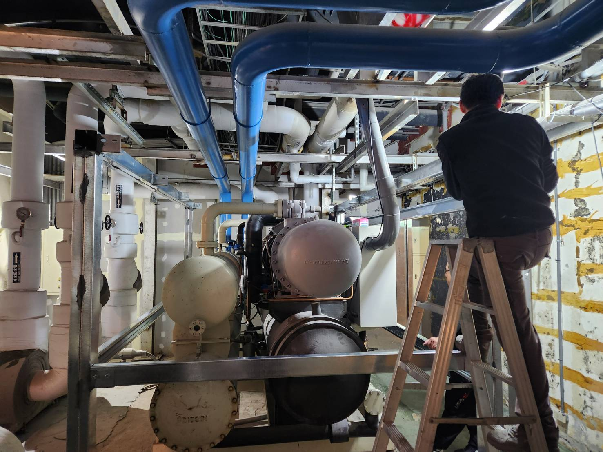
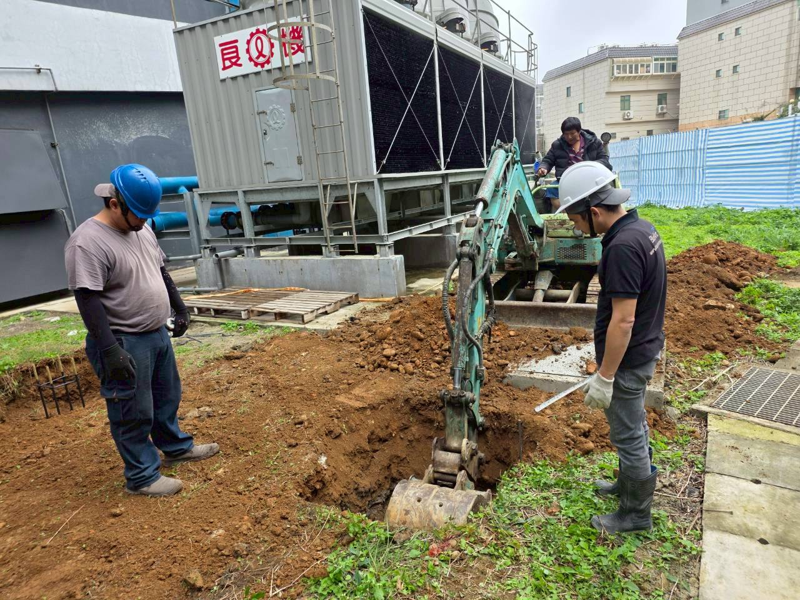
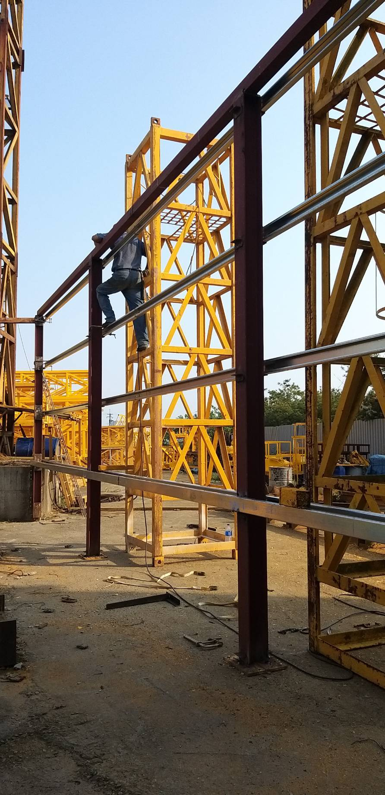
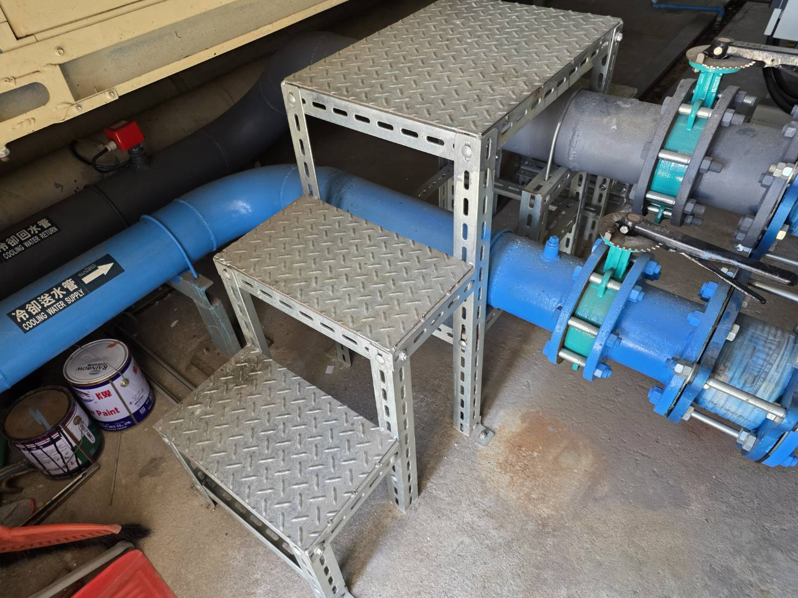
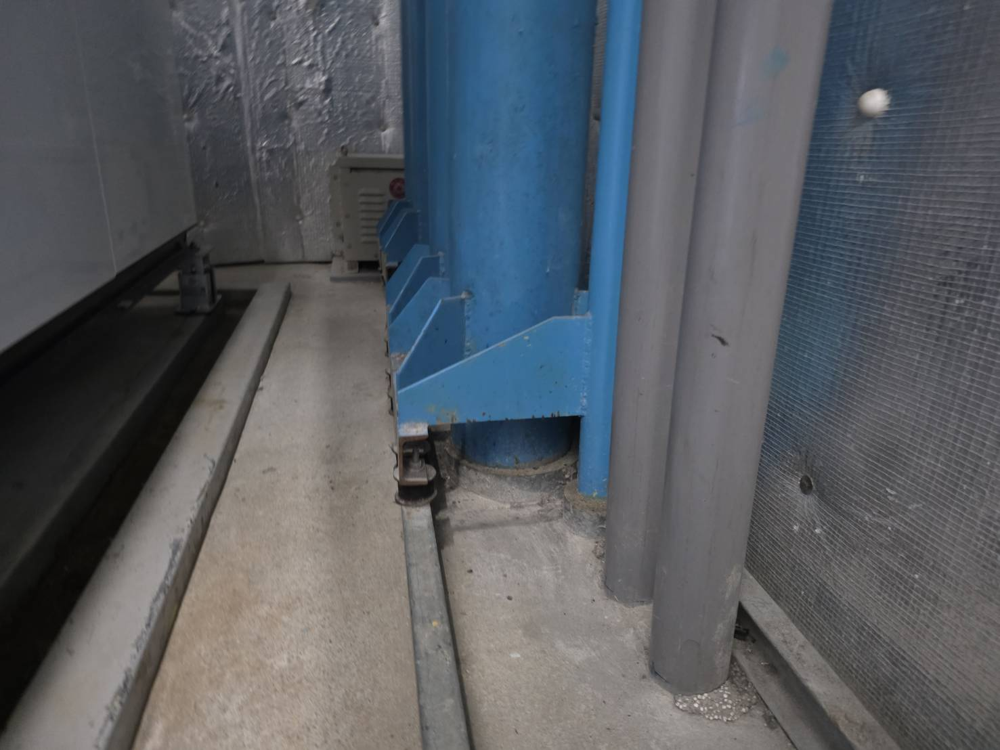
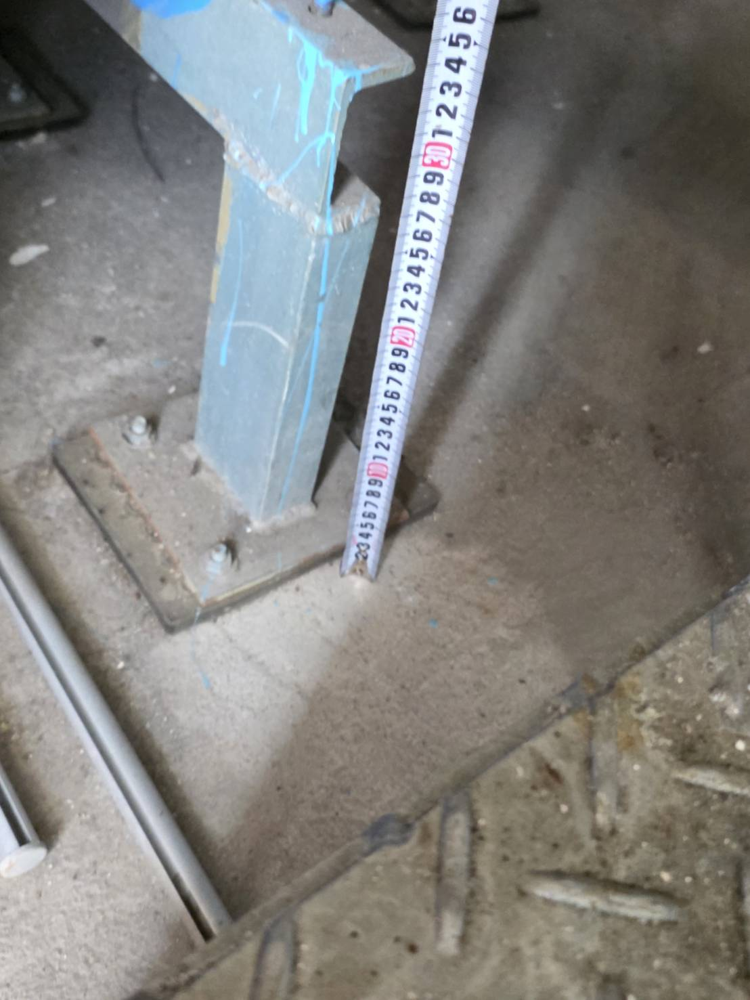
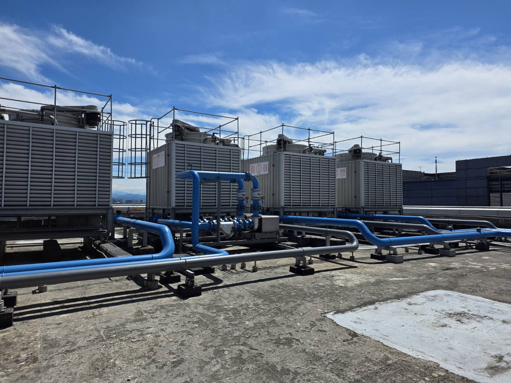

工業噪音改善，從現場量測開始工業噪音・隔音・消音器・低頻振動，先找真正的聲源與傳遞路徑
中央噪音工程專業處理工廠與大型設備噪音。冷卻水塔、冰水主機、空壓機、發電機、鼓風機、排風機、飯店機電設備等，都先從現場量測與設備運轉條件開始判斷，再依空氣傳音、風管傳聲、管路與結構傳振規劃隔音、消音、吸音與減震。
依設備與噪音問題，找到適合的改善方式。
工業噪音常常同時牽涉設備本體、進排風、管路、基座、吊架、機房開口與建築結構。可依現場問題，查看工業噪音、隔音、消音或低頻振動的改善方式。
工廠設備、週界、鄰宅陳情、環保局稽查與大型設備噪音改善。
工業噪音工程總覽 →隔音罩、機房隔音、工業隔音牆、門縫與開口控制，兼顧維修與散熱。
工業隔音牆設計 →排風機、鼓風機、風管與氣流噪音，依風量、風壓、頻率與壓損設計。
消音器與風量設計 →冰水主機、泵浦、壓縮機、管路、吊架與樓板結構傳振的嗡嗡聲。
低頻與結構傳振 →從冷卻水塔到發電機，設備不同，噪音路徑也不同。
我們不把每個現場都套同一種材料。設備聲、氣流聲、低頻與結構傳振要分開看，才能把預算花在真正有效的位置。

冷卻水塔噪音
風扇、落水、馬達、進排風與結構振動，依受音方向設計。
查看專頁 →
冰水主機噪音
主機、泵浦、管路、吊架、軟接與樓板傳振，常見低頻嗡嗡聲。
查看專頁 →
空壓機噪音
隔音罩同時要考慮散熱、進排風、基座與管路振動。
查看專頁 →
發電機噪音
排氣、進排風、機房開口、低頻與基座振動一起處理。
查看專頁 →
鼓風機／風機
進出口氣流聲、風管傳聲與設備振動，常搭配消音器或消音箱。
查看內容 →
排風機／抽風設備
依風量、出口方向、鄰界位置與施工空間規劃消音與隔音。
查看專頁 →先看受影響的位置，再回頭找聲音怎麼跑過去。
同一台設備，在機房旁、工廠邊界、鄰宅窗邊、樓上辦公室或飯店客房，改善策略可能完全不同。現場會看背景噪音、設備啟停、距離、頻率、風量、散熱、管路與結構，再決定工法。

客房半夜的嗡嗡聲，可能從機房傳來。
飯店與旅館常見冰水主機、壓縮機、循環泵浦、冷卻水塔、變壓器、發電機、污水鼓風機與廚房排煙設備。聲音可能透過樓板、樑柱、管路、吊架或風管送進客房。老舊設備不一定要整套更換，可以先從制振、軟接、吊架、風管消音與結構硬接點著手。
不只工廠，也處理商業與大型建築機電噪音。
工廠／製造業
風機、鼓風機、空壓機、冷卻水塔、製程設備與週界噪音。
飯店／旅館
冰水主機、泵浦、變壓器、發電機、廚房排煙與客房低頻。
商場／餐飲
排風機、抽風機、冷凍設備、風管出口與鄰宅擾鄰問題。
大樓／管委會
公共設備、冷氣室外機、泵浦、風機與結構傳振爭議。
機房／發電設備
進排風消音、排氣消音器、隔音門牆與設備基座減震。
被稽查／陳情案件
配合環保局資料、受音點與設備時段，優先處理主要聲源。
現場問題與工程改善紀錄。
查看排風機、冰水主機的現場處理紀錄，以及工業隔音牆的設計說明，了解不同設備與施工條件下的改善方式。
從現場勘查、工法設計到施工後驗證。
收資料
設備照片、銘牌、尺寸、位置、運轉時段、受影響位置與既有量測。
現勘量測
比對背景與設備啟停，確認主要聲源與傳遞路徑。
設計工法
隔音、消音、吸音、減震依需求組合，兼顧風量、散熱與維修。
施工驗證
工程完成後再看分貝、振動與受音點的改善結果。
客戶最常先問的幾件事。
工廠噪音改善第一步是什麼？
先確認背景噪音、主要聲源、受影響位置與聲音傳遞路徑，再配合設備啟停與噪音／振動量測，判斷是空氣傳音、風管傳聲、管路或結構傳振。
隔音、吸音、消音有什麼不同？
隔音是阻擋聲音穿透；吸音主要降低空間內反射；消音器常處理進排風與管道氣流噪音。工業現場通常要依聲源與路徑組合使用。
低頻嗡嗡聲為什麼比較麻煩？
低頻可能沿空氣、管路、吊架、基座與建築結構傳遞，遠端還可能因共振變得更明顯，所以要逐步量測與排除。
改善一定可以保證降低 10 dB 嗎？
不能脫離現場條件直接保證固定數字。聲源、頻率、開口、風量、空間、工法與預算都會影響結果，應以現場量測與可施工條件判斷。
可以先看照片初估嗎？
可以。設備銘牌、尺寸、現場照片、設備與受音位置距離、環保局稽查或量測資料都很有價值；正式方案與價格仍建議現勘後確認。